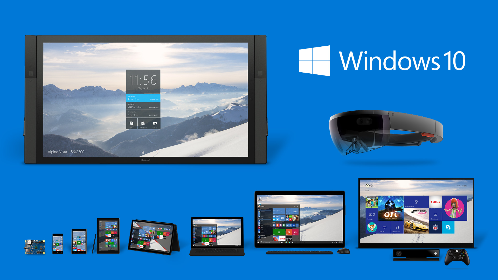
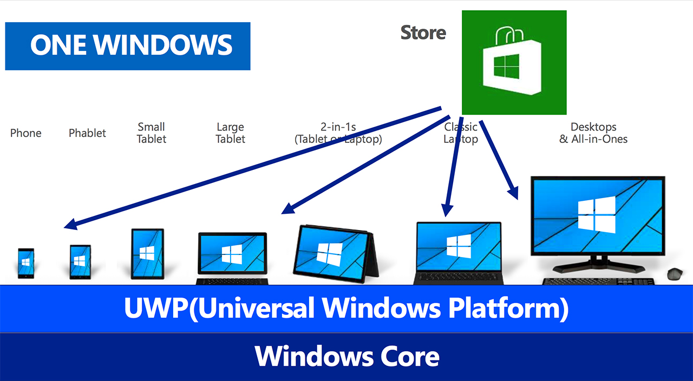
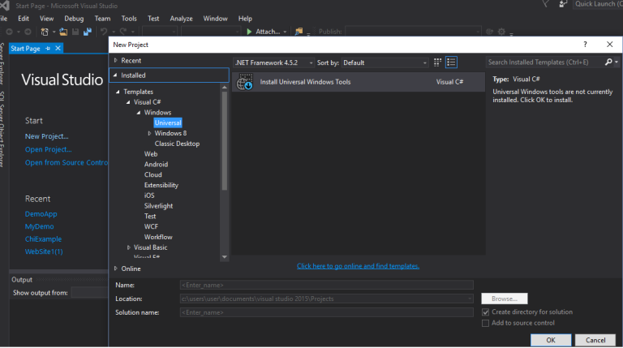

Universal Windows Platform (UWP)
UWP là gì?
UWP - viết tắt “Universal Windows Platform” là một nền tảng cốt lõi của Windows 10 giúp các ứng dụng thực hiện được những tính năng của mình, và điểm hay nhất nằm ở chỗ UWP sẽ hoạt động thống nhất trên tất cả mọi thiết bị nào có khả năng chạy Windows 10, từ điện thoại, máy tính bảng, PC cho đến HoloLens và Xbox. Nếu không có UWP thì sẽ không có các app universal cho chúng ta xài, và Microsoft cũng khó mà thực hiện được chiến lược “One Windows” của họ đối với hệ sinh thái Windows 10.
Đây cũng là một nền tảng chưa các tính năng mà Win10 ‘phơi’ ra cho các ứng dụng chui vào sử dụng, giả sử khả năng truy cập mạng, khả năng truy cập xuống bộ nhớ lưu trữ của máy, khả năng xử lý tập tin, khả năng chơi âm thanh, khả năng phát video, khả năng dựng đồ họa xài cho game… Xem UWP là một lớp bên dưới và các ứng dụng universal sẽ được xây dựng dựa trên lớp này.
Điểm tuyệt vời nhất của UWP đó là các bộ tính năng mà nó cung cấp cho app sẽ giống nhau ở tất cả mọi thiết bị chạy Windows 10 và có thể là Windows 11, 12 gì đó trong tương lai. Sự giống nhau này bao gồm việc chỉ có một bộ hàm API giống nhau, một định dạng app như nhau (đuôi *.appx), và ở cấp cao hơn là chỉ có 1 cửa hàng duy nhất để phân phối các app universal. Tất nhiên bạn sẽ cần chỉnh lại giao diện cho phù hợp và dễ dùng, nhưng về cơ bản chỉ cần bạn bật cho máy nào thì máy đó sẽ chạy được app của bạn.
Lấy ví dụ đơn giản như thế này: app Dropbox Windows 10 cho PC, cho mobile và cho Xbox đều chỉ xài chung một cách thức kết nối với máy chủ, chung một cách download file và lưu vào máy của bạn, chung một cách play các file nhạc và video. App cho PC, mobile hay Xbox thì cũng đều có đuôi là appx, và chúng đều được phân phối qua Windows Store mà thôi.

Điều này giúp đơn giản hóa quá trình viết app của các lập trình viên, dẫn đến việc app sẽ ra mắt nhanh hơn, update nhanh hơn, tiết kiệm chi phí và nhân lực.
Song song đó, UWP cũng có những tính năng mở rộng riêng cho từng loại thiết bị và Microsoft gọi nó là các Extension SDK và hàm API chuyên biệt. Ví dụ, Extension SDK cho HoloLens sẽ bổ sung thêm tính năng điều khiển bằng cử chỉ cho app, thứ mà máy tính hay điện thoại không có. Extension SDK cho Xbox sẽ có thêm khả năng truy cập và sử dụng cảm biến Kinect để nhận biết chuyển động của bạn. Bằng cách này, các nhà phát triển có thể dễ dàng tùy biến riêng tính năng cho từng loại máy mà không “đụng chạm” tới phần chung của app.

Một số khuyết điểm của UWP
Là một nền tảng mới ra đời cách đây chưa lâu, đương nhiên UWP sẽ còn những thiếu sót cần được khắc phục trong thời gian tới
- MS chỉ cho phép download các ứng dụng trên Windows Store và yêu cầu 30% lợi nhuận.
- Ngoài ra, một số ứng dụng game trên UWP như Tom Raider, QUantum Break cũng nhận được những phản hồi tiêu cực, bao gồm không thể tắt V-sync, không SLI và Crossfire support và không có .exe (như Win32) cũng như không có chế độ độc quyền toàn hình (exlusive full screen mode)
Dù có những khuyết điểm như vậy nhưng UWP vẫn là một nền tảng ứng dụng đáng được phổ biến rộng rãi của Microsoft vì tính hiệu suất của nó. Bạn hoàn toàn có thể có được bộ công cụ Universal Windows Tools với Visual Studio để tạo một ứng dụng UWP với 2 cái click chuột. Thử nha!
